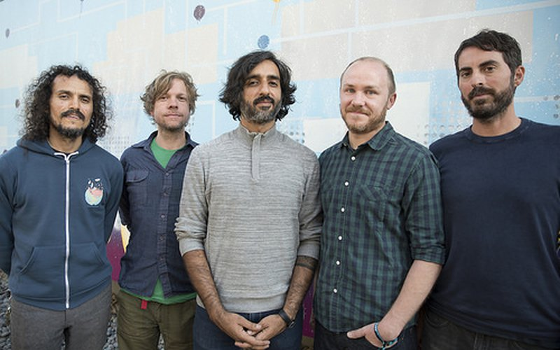

Here are some bands that I like and why:
- Three different vocalists, each with their own distinct sounds:
- Tarja Turunen, Finnish singer classically trained in Operatic style
- Anette Olzon, a more pop-ish Swedish singer, great accent to the darker tones of the band
- Floor Jansen, Dutch vocal instructor and presently has frontlined at least four bands. Can sing anything.
- Incredible blend of heavy metal and symphonic opera. Like mixing mint and orange, except it's amazing.
- Still making music - they have albums dating back as far as 1996, and the most recent album came out 2020.
- Classic rock feel, one of the powerhouses of grunge
- Though Eddie Vedder is near-unintelligible at times, his crooning is emotional and songs hit the heart.
- Entire Ten album is available for Rock Band 3

- Instrumental band featured heavily in the movie Friday Night Lights
- Very good sound to just chill out or practice guitar
- Originally from Texas, they've since toured the world